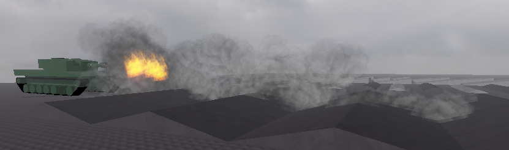
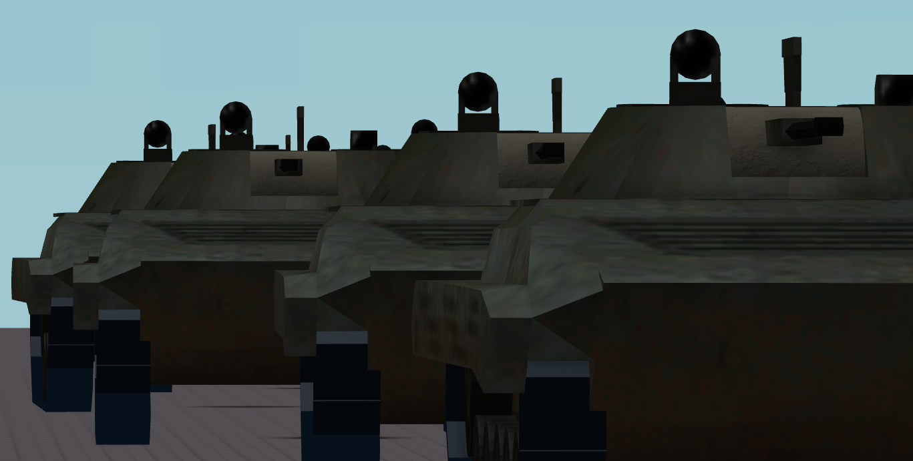
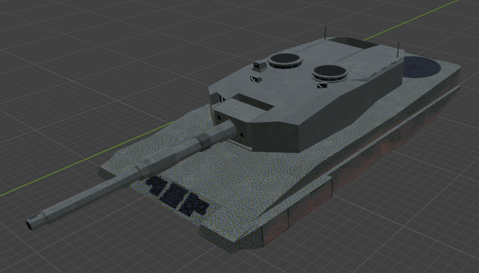

I'm a Computer Programming student currently studying at St. Clair College. I've found an interest in
computing ever since I got my first exposure to coding back when I was only a kid messing around with assets
in Roblox Studio. In grade 10 I took my first Computer Science class, and that would mark the start of my
journey as a programmer. Since then, I've consistently been involved in learning and developing,
pushing myself to learn as much as possible.
Skills
During my time learning about computer programming, I have gained much experience.
Languages
C#
CSS
HTML
Java
JavaScript
JSON
Lua
Python
PHP
SQL
XML
Software and Tools
Git/GitHub
MySQL
Eclipse IDE
IntelliJ IDEA Community Edition
PhpStorm
VSCode
Linux
Awards and Recognition
University of Windsor Annual Secondary School Programming Competition
I have participated in the 18th and 19th Annual Secondary School Programming Competition (SSPC). The SSPC
was a test of teamwork and communication, with each competitor being put into teams of three and given
the goal of creating functional and optimized solutions in code to solve a set of problems.
In my school, each competitor was invited individually by teachers who saw potential in them. Both in
grade 11 and 12, I would be selected to represent my school.
Canadian Computing Competition
The Canadian Computing Competition (CCC) is held by the University of Waterloo annually. I participated
in 2025. Unlike the SSPC, the CCC is hosted online, giving competitors the opportunity to compete from
their own class. This put a focus on individual skill, as we were expected to work alone without any
aid.
Examples of Work
SABOT



In grade 11, having just finished my first computer science class, I found myself wanting to explore the
topic further, outside class. Being already comfortable with it, I found myself opening Roblox Studio
and creating a new project, which would be the culmination of my knowledge in computer science at the
time.
SABOT is a project where I am able to test my knowledge and apply it in a way where I can combine my
two interests: coding and history. Along with this, the project pushed me to develop my skills in
multiple areas. Most, if not all of the game assets were created by me. Models and animations were
done by myself using the tools Roblox Studio had to offer along with third-party software such as
Blender.
Throughout the development of SABOT, I have accomplished many things that I would have previously thought
impossible for someone of my skill level. Autonomos navigation, AI vehicle behaviour, an in-depth
ballistics simulator that calculated projectile motion and impact physics in real time, advanced
movement and vehicle interaction systems, and so on. When I first started SABOT, I wouldn't have thought
I could accomplish such things. Looking back at the project, it's clear how much I've grown since I
first started over a year ago.
Godot Game
While work continued on SABOT, I found myself feeling limited by the boundaries of the Roblox engine.
Along with this, as SABOT grew larger in size and complexity, I found myself becoming more wary of
Roblox Studio. Due to being based off the Roblox platform, much of the project was built off of
pre-existing systems that were built into Roblox Studio. However, my major concern was the fact that
Roblox Studio, and by extention, anything made using it, was essentially under the control of Roblox.
Assets are moderated, and projects are reliant on you being able to access your Roblox account. If for
whatever reason you were hacked, banned, or the Roblox servers went down, your work would go with it.
I wanted more freedom, a bigger challenge for myself where I can put to use all the things I have
learned with a tool that offers greater control over the project.
I found myself gravitating to Godot. It's a capable game engine that many games I know utilize, however
its main attraction is that its open source. This means that while some software come as-is, Godot
allows anyone to modify it to suit their needs. Godot also provides .NET support, which lets me code in
C#.